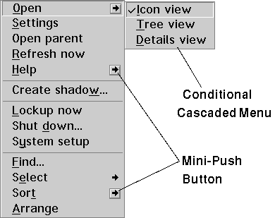

<HTML>
<HEAD>
<META HTTP-EQUIV="CONTENT-TYPE" CONTENT="TEXT/HTML; CHARSET=UTF-8">
<TITLE>About Pop-Up Menu Methods</TITLE>
</HEAD>
<BODY>
<H1>About Pop-Up Menu Methods</H1><!-- entering slot 218 -->
<P>
Pop-up menu methods support the actions that the user can perform on an
object. These actions appear in a context or pop-up menu when the user presses
button 2 of the pointing device. A pop-up menu contains action choices for
an object in its current context or state. The contents of a pop-up menu
depends on the state of the object.
<P>
Pop-up menus consist of a set of selectable items and any pull-down or conditional
cascaded menus associated with them. In the following figure,<B> Open</B>,
<B>Settings</B>,<B> Open parent</B>,<B> Refresh now</B>, and so on, are
items in the object's primary pop-up menu.<B> Icon</B>,<B> Tree</B>, and
<B>Details</B> are items in the<B> Open</B> pull-down or conditional cascaded
menu.<!-- Unable to decode bitmap format -->
<P>
Conditional cascaded menus have mini-push buttons displayed next to the
pop-up menu item. When the user selects the mini-push button, the pull-down
menu is displayed. As shown in the above figure,<B> Open</B>,<B> Help</B>,
and<B> Sort</B> have mini-push buttons that are represented by a right arrow
() surrounded by a square box. If the user selects one of these three pop-up
menu items, a default action listed in the submenu is performed. The default
action is represented by a check mark. The default action for the<B> Open
</B>item is Icon view, the<B> Help</B> item is General help, and the<B> Sort
</B>item is Name. This submenu is called a<I> conditional cascaded</I> menu
because it is displayed only if the user selects the mini-push button.
<P>
Like Settings notebook pages, pop-up menus are inherited from a class' ancestor
classes. This means that they include pop-up menu items that ancestor classes
have added to or removed from the pop-up menu inherited from WPObject. The
pop-up methods permit you to add new menu items to or remove menu items
from the pop-up menu inherited from an object's ancestor classes, as shown
in the following table:
<PRE>┌─────────────────────────┬───────────────────────────────────┐
│Method                   │Description                        │
├─────────────────────────┼───────────────────────────────────┤
│wpAddUserItemsToPopupMenu│Adds user-defined items to the     │
│                         │popup menu.                        │
├─────────────────────────┼───────────────────────────────────┤
│wpFilterMenu             │Filters out options from the       │
│                         │object's pop-up menu that do not   │
│                         │apply.  (OS/2 Version 4 or higher.)│
├─────────────────────────┼───────────────────────────────────┤
│wpFilterPopupMenu        │Filters out options from the       │
│                         │object's pop-up menu that do not   │
│                         │apply.                             │
├─────────────────────────┼───────────────────────────────────┤
│wpInsertMenuItems        │Inserts items into the object's    │
│                         │pop-up menu.  (OS/2 Version 4 or   │
│                         │higher.)                           │
├─────────────────────────┼───────────────────────────────────┤
│wpInsertPopupMenuItems   │Inserts items into the object's    │
│                         │pop-up menu.                       │
├─────────────────────────┼───────────────────────────────────┤
│wpModifyMenu             │Adds new options to the object's   │
│                         │pop-up menu.  (OS/2 Version 4 or   │
│                         │higher.)                           │
├─────────────────────────┼───────────────────────────────────┤
│wpModifyPopupMenu        │Adds new options to the object's   │
│                         │pop-up menu.                       │
├─────────────────────────┼───────────────────────────────────┤
│wpSetMenuStyle           │Sets the menu style to be either   │
│                         │long or short.                     │
└─────────────────────────┴───────────────────────────────────┘
</PRE>

<P>
When the user requests an object's pop-up menu, the Workplace Shell builds
it by calling the object's wpFilterPopupMenu and wpModifyPopupMenu. The
wpInsertPopupMenuItems method is called by an override to wpModifyPopupMenu
to add new options to an object's pop-up menu.

<P><HR>

<A HREF="202_L1_ObjectUserActionPopU.html">[Back: Object User Action: Pop-Up Menu Methods]</A> <BR>
<A HREF="204_L3_SupportforUserSelect.html">[Next: Support for User Selection of Standard Pop-Up Menu Items]</A> 
</BODY>
</HTML>
